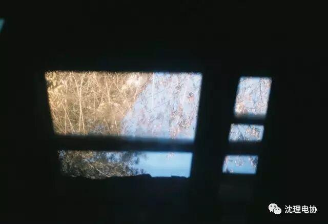
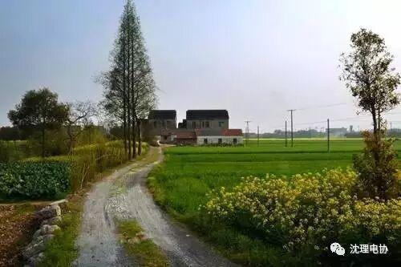

下一站，回家
下一站，回家
点击上方“蓝字”关注本公众号

乡愁，
是一张小小的车票。
我在这头，
母亲在那头。
家
二
曾经的我，
怀揣一颗闯荡的心，
背起行囊。
繁华的都市，
没落的街道，
........
处处都有我们青涩的足迹，
和辛酸的泪水...
我的家乡，
无意间变成了一家客栈，
一家我求学路上的客栈。

上了大学的我们，
几乎一年才会回家两次，甚至更少。
每次与家人的相聚，短之又短！
是不是你们晚上躺在床上
也会想起你们的家人朋友
外面的世界是很大，
但容身的地方却很小！
而你们却在异乡为自己的学业拼搏.
大都市的繁华，
是否让孤单的你，
又多了几分空虚 落寞 担忧 思念？
01
How Do I Live
你开始想念，
想念妈妈为你做的可口的饭菜，
想念故乡的小吃。
你开始回忆，
回忆家里农忙的季节，
回忆父母那苍老的身影，
是否在日落时分依旧在田间地头忙碌着？
你是不是很自责，
自责自己怎么不留在父母身旁，
没有陪着他们一起分担，
自责自己怎么不在自己学习空余给父母同个电话，
没有陪他们聊一些家常...
离开家乡，独自在外,
一个人的日子冷暖自知，
在这样的日子里，
你还好吗？
小编想在期末之前献给大家这篇鸡汤，给在外求学的大家，无论你面对什么样的困境，经历什么样的挫折，已经麻木了多久，请不要忘记自己坚持多年的梦，不要忘记你自己的家乡......
当你觉得外面的世界很精彩
家人会在那里衷心地祝福你
当你觉得外面的世界很无奈
家人会在那里耐心地等待你

乡愁
是一张小小的车票
我在这头
母亲在那头
现在这几天，小编相信很多同学都开始抢着春运回家的车票了，祝愿大家都能顺利买到回家的车票。
下一站：回家
编辑：范淼

公众号ID
沈理电协
长按识别左边二维码关注我们
点击阅读原文，查看更多